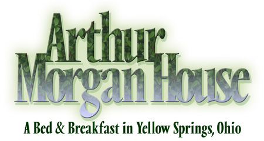
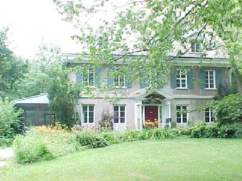

|  |  |
Welcome to Arthur Morgan House Bed & Breakfast! You'll sleep soundly in one of six comfortable rooms, each with a private bath. In the morning you'll enjoy a delicious breakfast, prepared to order with pure organically grown ingredients including locally roasted coffee, freshly made scones, free-range eggs, and more. Susanne Oldham, your innkeeper, grew up in Yellow Springs, Ohio and can answer your questions. She is there to make sure you are comfortable and have everything you need.
Check our availability and book your room online using our easy and secure reservation system - it is up-to-date, safe, quick and can be done at any time of the day.
| Stay a while! We are offering $10 off per night pr room for a three- or more night stay. |
|---|
Enjoy a relaxing in-room massage by a Licensed Massage Therapist. (available in rooms Heron, Hawk, Warbler and Owl) |
Snuggle up with chocolate-covered strawberries, assorted snacks or a bottle of red, white or sparkling wine in the comfort of your room. |
Appreciate the Glen Helen Nature Preserve on a walk with a naturalist. |
Arthur Morgan House features six beautiful, newly renovated guest rooms, each with private bath. Each room has either a comfortable king, queen or two single beds, all made up with luxurious 800-count linens. All rooms are air-conditioned in summer and have beautifully finished oak floors.
The living room has a fireplace and comfortable couches, and is decorated with crafts from southern Africa, many of them for sale. There are games, puzzles, books, CDs, and DVDs for your entertainment.
Free wireless internet is available throughout the house. Arthur Morgan House is smoke-free. Pets are not permitted except in special circumstances. Rooms do not have telephones or televisions; free calls within the lower 48 states are permitted from the house phone.
The charming village of Yellow Springs has fine restaurants and food shops, as well as more than fifty unique gift and craft shops and galleries. The Little Miami Scenic Bike Path passes through the village on its way from Springfield to Cincinnati, and is enjoyed by walkers and folks on bicycles, roller blades, skate boards, and more. Arthur Morgan House Bed & Breakfast is located near the Little Art Theater, Sunrise Cafe, the Winds Café, Ha Ha Pizza, historic Ye Olde Trail Tavern, Chamber Music Yellow Springs concerts, the Bryan Center, the Dharma Buddhist Center, and Yoga Springs Studio. The B&B is three blocks from the Antioch College campus and Glen Helen's Trailside Museum, and it is a short drive to John Bryan State Park, Clifton Gorge, and Young's Jersey Dairy with its delicious ice cream and baked goods, miniature golf, driving range and batting cage.
Events in Yellow Springs worth visiting include Street Fairs in June and October, Strawberry Festival in June, Apple Festival in October, Chamber Music Yellow Springs concerts, yoga workshops, horse shows at the Riding Centre, and many more. See also the events calendars on our Links of Interest page.
From our guest book:
"so
warm and relaxing... I look forward to coming again."
"thanks for the great breakfast and conversation!"
"loved our room – great food – great company."
"lovely – very Yellow Springs!"
"bed
was great, breakfast even better!"
"very
cosy and relaxing."
"great
hospitality"
"super stay here - we will be back"
"very gracious hospitality here"
"thank
you for the wonderful relaxing environment"
"just great!"
"you are a wonderful and very interesting hostess"